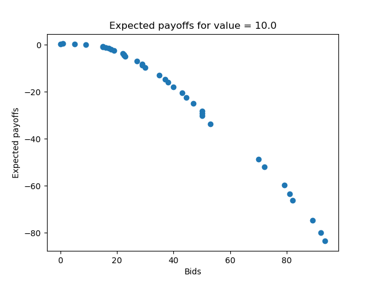
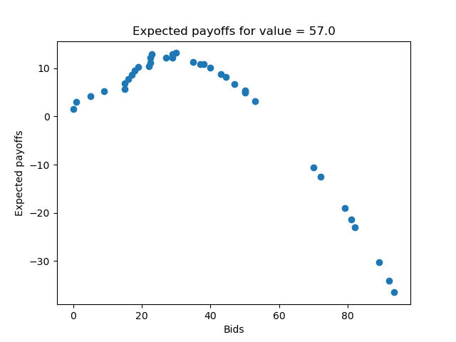
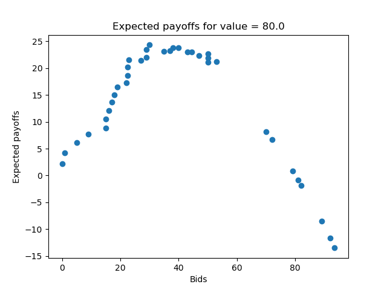

Optimal Auction Strategies
Project Overview
The optimal auction strategy project was done for an economics class at Northwestern. The idea was to determine how one should bid in an auction given the auction type, how many people are bidding, and a unique value for the item being sold. We ran a series of pseudo-auctions in our class to collect data and used it to draw conclusions about optimal strategies.Auction Types
We tested several different types of auctions in our experiment:- First price auctions - highest bidder wins and pays their bid; the winner has a utility equal to their value minus their bid, everyone else has utility 0
- Second price auctions - highest bidder wins and pays a price equal to the second highest bid; winner has a utility equal to their value minus the second highest bid, everyone else has a utility of 0
- All pay auctions - highest bidder wins, but everyone pays their bid; the winner has a utility equal to their value minus their bid, everyone else has a utiilty equal to -bid
Setup and Theoretical Optimal Strategies
We operated our auctions under the following format:- Participants would be assigned a random, uniformly distributed value between 1 and 100 (inclusive)
- Participants would be told how many people they were bidding against, but not specifically who
- Participants would enter their bids, as well as their values and number of opponents, using an online form


